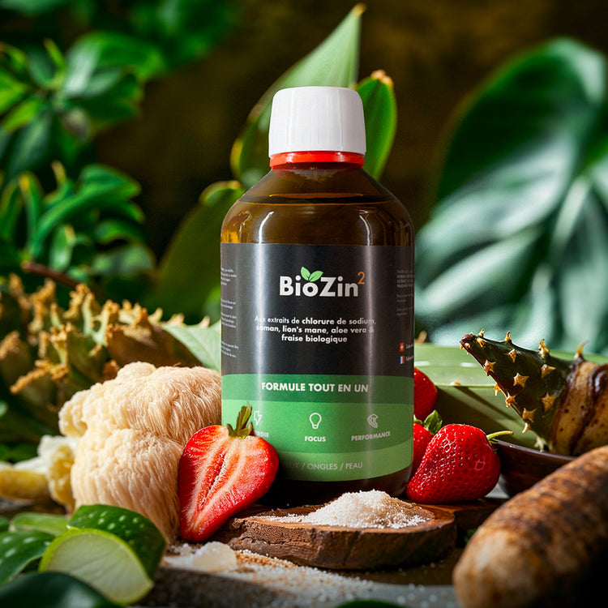

Votre boost santé 100% naturel Découvre
La révolution des compléments alimentaires
La complémentation fait partie de nos vies. Les sportifs de haut-niveau, comme les entrepreneurs, consommes quotidiennement des compléments alimentaires.
Aujourd'hui, BioZin² propose un solution simple et révolutionnaire : un complément alimentaire simple, complet et en une seule prise par mois.
Découvrir